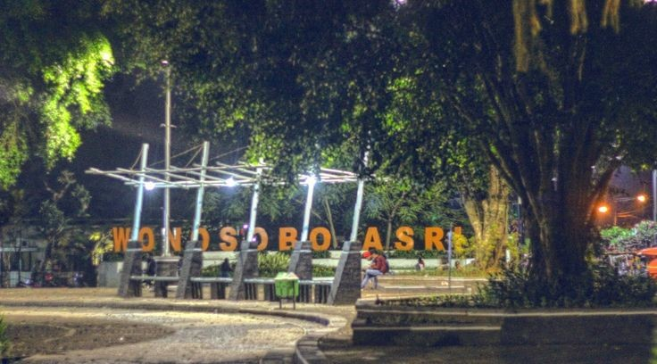
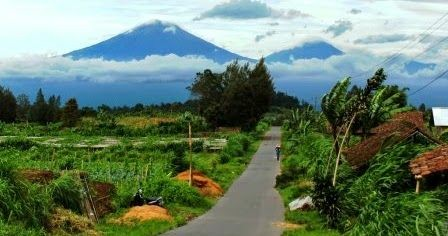
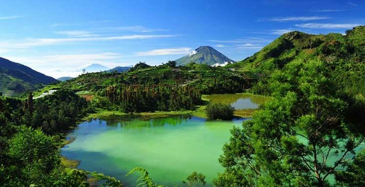
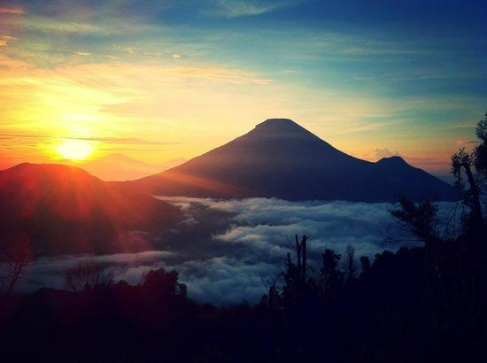

Sejarah

Sejarah berdirinya Kabupaten Wonosobo tidak dapat dilepaskan dari kisah tiga pengembara, yang masuk ke wilayah ini pada awal abad 17 lalu. Ketiga orang itu, Kyai Kolodete, Kyai Karim, dan Kyai Walik, kemudian berpisah dan menempati tiga wilayah berbeda. Kyai Kolodete membuka permukiman di Dataran Tinggi Dieng, Kyai Karim di sekitar Kalibeber, dan Kyai Walik memilih wilayah yang kini menjadi Kota Wonosobo. Dari ketiga orang itu pula, muncuk anak keturunan yang di kelak kemudian hari menjadi para penguasa di seputar Wonosobo.
Seperti salah seorang cucu Kyai Karim, yang sering juga disebut Ki Singowedono. Setelah mendapat hadiah dari Keraton Mataram, berupa sebuah wilayah di Selomerto, Ki Singowedono kemudian bergelar Tumenggung Jogonegoro. Jejak Tumenggung Jogonegoro dapat ditemukan di makamnya, di Desa Pakuncen, Selomerto. Dari Selomerto itu pula, sejarah asal kata Wonosobo diyakini bermula. Banyak pihak meyakini, kata Wonosobo berasal dari sebuah dusun di Desa Polobangan, Selomerto. Dusun bernama Wanasaba tersebut didirikan oleh Kyai Wanasaba. Dusun kecil tersebut hingga kini masih ada, dan banyak dikunjungi para peziarah, yang ingin berdoa di makam Kyai Wanasaba, Kyai Goplem, Kyai Putih, dan Kyai Wan Haji.
Geografis

Sebuah kabupaten di Provinsi Jawa Tengah. Ibukotanya adalah Wonosobo. Kabupaten ini berbatasan dengan Kabupaten Temanggung dan Kabupaten Magelang di timur, Kabupaten Purworejo di selatan, Kabupaten Kebumen dan Kabupaten Banjarnegara di barat, serta Kabupaten Batang dan Kabupaten Kendal di utara.
Kabupaten Wonosobo berjarak 120 km dari ibu kota Jawa Tengah (Semarang) dan 520 km dari Ibu kota Negara (Jakarta), berada pada rentang 250 dpl - 2.250 dpl dengan dominasi pada rentang 500 dpl - 1.000 dpl sebesar 50% (persen) dari seluruh areal, menjadikan ciri dataran tinggi sebagai wilayah Kabupaten Wonosobo dengan poisi pasial berada di tengah-tengah Pulau Jawa dan berada diantara jalur pantai utara dan jalur pantai selatan. elain itu menjadi bagian terpenting dari jaringan Jalan Nasional ruas jalan Buntu - Pringsurat yang memberi akses dari dan menuju dua jalur strategis nasional tersebut. Kabupaten Wonosobo merupakan salah satu dari 35 Kabupaten/ Kota di Provinsi Jawa Tengah yang terletak pada 70.11'.20" sampai 70.36'.24" garis Lintang Selatan (LS), serta 1090.44'.08" sampai 1100.04'.32" garis Bujur Timur (BT), dengan luas wilayah 98.468 hektar (984,68 km2) atau 3,03% luas Provinsi Jawa Tengah.
Wisata
a. Telaga Menjer

Telaga warna adalah tempat wisata andalan yang dikunjungi para pelancong lokal ataupun pelancong luar. Telaga Warna ini juga merupakan danau kecil yang cahaya mataharinya bisa menembus ke dasar air danau. Daerah hanya itu, Anda juga dapat melihat pemandangan yang menakjubkan saat berada di ketinggian 2000 mdpl.Menemukan daerah wisata ini juga tak akan sulit. Anda dapat bertanya pada warga sekitar atau mengikuti pertanda lewat google maps.
b. Bukit Sikunir

Bukit Sikunir ini terkenal karena adanya estetika Golden Sunrise. Anda dapat menyaksikannya dapat dan mesti mencari waktu yang harus supaya tidak terlalu ramai dengan pengunjung. Di acara-acara tertentu, tak menuju tempat wisata ini seringkali macet. Dulunya bukit ini ditemukan oleh wisatawan asing yang datang ke Dieng pada tahun 80an. Namun berada di Sembungan, Kejajar. Nama unik Sikunir sendiri berasal dari tanaman rempah Kunir yang berwarna kuning. Warna yang lokasinya pantulan sinar keindahan saat sunrise.